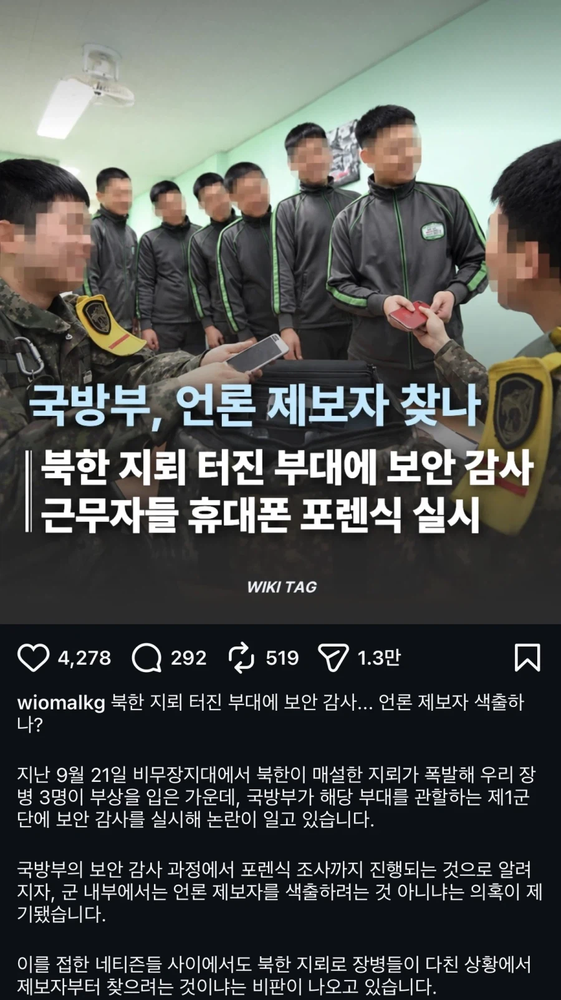

북한 지뢰 터진 25사단 근황.jpg
댓글
ㅋㅋㅋㅋㅋ 언제나 군대식 일처리
누가 적인가
증거 가져오라더니 증거 인멸을 대신 해주네 ㄷㄷ
사단 헌병대 설문 존나 들어오고 편의를 위해서 그냥 넘어간 아무것도 아닌거 하나 끄집어 내서 부조리로 둔갑 시켜서 범인 만들고 전체인원 정기휴가 제외 모든 포상 외출 외박 제한 걸겠구만 ㅋㅋ
씨발년들이 저거 색출해서 뭐할건데 평생 덮고갈수 있는 사안이냐?
종북세력입장에서 생각해봐
종북을 영어로 하면? 노스 링
ㅋㅋㅋㅋㅋㅋㅋㅋㅋㅋㅋㅋ
반박시 김정일 후장닦개

노스 벨 아니냐?
진짜 미친 군대 다됬네...이게 나라를 지키는 군대냐?
내부고발자 색출은 국군의 유구한 전통 아니었냐
하는 짓이 어디랑 흡사하네 ㅋㅋ
이야 포렌식을 ㅋㅋㅋㅋㅋ 군법이 헌법위에 있나보네
군대라는 집단은 참 한결같구나
이야 이걸 덮으려해? ㅋㅋㅋ 들키니 내부자 색출?
씻팔 해야할게있고 말아야할게 있지
진짜 단호하게 대응하네…
곧 상응하는 조치도 할 듯 ㅋㅋㅋㅋ
권위주의 정부의 행태가 아닌가?ㅋㅋㅋㅋ
누구보다 민주적인 정부잖아 지들 입으론ㅋㅋㅋㅋ
스마트폰 허용했으면 비밀엄수나 보안 지키기 몇 배는 더 빡세질거라는 예상은 당연히 했어야함
보안앱 생기기 이전이 ㄹㅇㅋㅋㅋㅋ 비밀자료 찍어서 가지고 있는거 기본이었음
뭐 예나지금이나 저지랄하는게 하루이틀이었나 ㅋㅋ
폰없던시절에도 누가제보했는지 콜렉트콜통화이력 싸지방이력 뒤지던새끼들인데 ㅋㅋ
이러니 우리의 주적은 간부라는 말이 나오는거지 뭐...

범죄자임?
허지웅 연전연승
ㅋㅋㅋㅋㅋㅋㅋ 공산국가답네 ㅋㅋㅋㅋㅋ
소중국다운 천안문 ㅋㅋ
ㅋㅋㅋㅋ 답다, 다워 ㅋㅋㅋ
우리나라 맞냐? 북한 아니고?
?